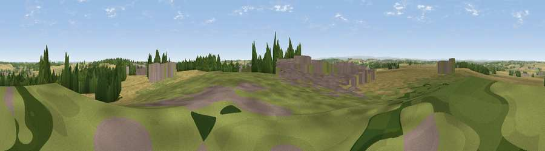

Upton Beacon
#20905 in England · top 33% of its area beats it · near UptonThe view, rendered

A 360° render of this exact spot computed from the terrain model, tree cover and land cover — summer colours, afternoon light, calibrated against photographs of famous viewpoints. Real trees, hedges and buildings will differ in detail.
The panorama
Grey silhouette: terrain skyline in each direction (720 bearings, Earth curvature and refraction included). Dashed green: skyline with trees (+15 m) and buildings (+8 m) as obstacles. Blue strip: how far the ground is visible on each bearing.
Where the view opens
Wedge length = distance to the farthest visible ground on that bearing (vegetation-aware). Rings at 10, 25 and 50 km.
What fills the view
55% cropland · 21% grassland · 14% woodland · 10% built-up
Angular shares of the visible panorama (visual magnitude), not map area. Landscape diversity 0.51 (0–1 Shannon).
Key numbers
More beautiful places nearby
The staircase of upgrades: each row has a higher view potential than everything closer. Driving times are estimates from straight-line distance, calibrated against real road routing — check an actual route before setting out.
| Place | Direction | Drive | Score |
|---|---|---|---|
| Viewpoint near Hampole | SE · 4 km | ~9 min | 53.9 |
| Viewpoint near Grimethorpe | SW · 6 km | ~13 min | 63.8 |
| Gale Common | NE · 10 km | ~20 min | 64.2 |
| Viewpoint near Woolley | W · 16 km | ~28 min | 67.9 |
| Hoyland Lowe | SW · 17 km | ~30 min | 68.7 |
| Viewpoint near Maltby | SSE · 23 km | ~37 min | 70.8 |
| Viewpoint near Hoylandswaine | WSW · 23 km | ~38 min | 72.7 |
| Viewpoint near Wharncliffe Side | SW · 24 km | ~39 min | 75.0 |
53.61995, -1.28480 · source: dobih hill · position refined by local search. Computed location — check access rights before visiting.